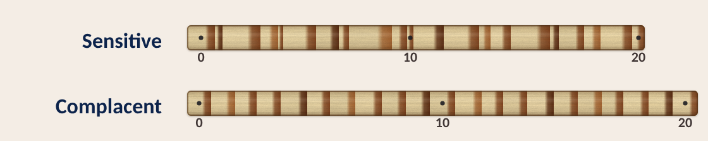
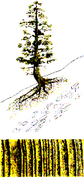
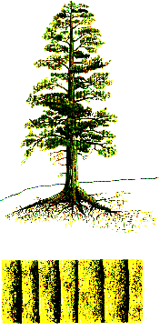
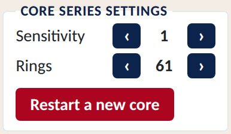

Sensitive vs. Complacent Tree-Ring Growth

 |
"Sensitive" tree growth:
|
 |
"Complacent" tree growth:
|
| When you try skeleton plotting for yourself: | |
|---|---|
Change the sensitivity of your virtual core with the arrow buttons, as on the right:
|
 |